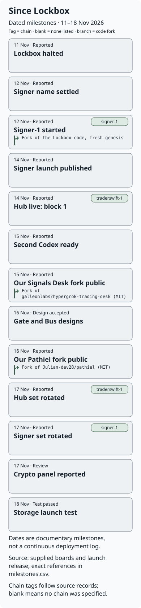
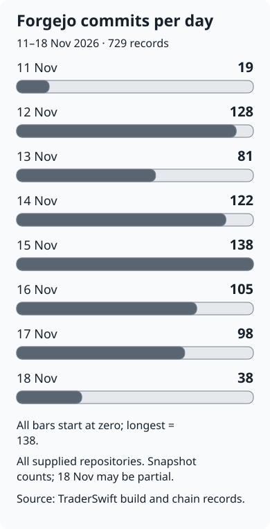

Update 01
Since Lockbox – A Week of Building Signer and TraderSwift
What we built between 11 and 18 November 2026, what broke, and what we changed.
Start with chapter 01On 11 November we halted our first chain, Lockbox, and archived it. Seven days later, we have a new signing chain with live orders behind it, a hub chain, a wallet design, our own sign-in, a storage chain that passed its first launch test, and a build line where most of the code is written by Codex.
This guide walks through that week: what we built, what broke, and what we changed because of it. Where something is a design and not yet running, it says so.
The week at a glance


Across all our repositories there are 729 commit records between 11 and 18 November. The busiest day was 15 November, with 138. These are commit records, not features; one fix can take several commits, and the last day is partial.
Table of contents
Markdown ↗- 01What happened to Lockbox?Halting and archiving our first chain, and settling on a new name.1 min
- 02What is signer-1, and what did it do this week?The live launch with real money, and the move to new machines.2 min
- 03What is the hub, traderswift-1?The chain at the centre of TraderSwift, and its validator rotation.1 min
- 04How did Codex become our main builder?How a job moves from spec to merge, and what the review panel found.2 min
- 05What is the wallet, and why does it have no seed phrase?One core, three skins, and a device ring instead of a seed phrase.1 min
- 06Why did we build our own sign-in?Passkey and wallet sign-in, and a gate we own.1 min
- 07What are Signals and the desk?From a published idea to an executed trade, through Signer.2 min
- 08What else did we start? Storage, the Bus, payments and moreStorage-1, the Bus, payments on Base, Goose and our own DNS.2 min
- 09What did we move onto our own servers?Our own rack servers, Proxmox, and a reboot that tested the hub.1 min
- 10What went wrong, and what did we change?The faults we found this week, and the rules we changed.2 min
- 11What is next?What each part of the system needs next.1 min
- 12Final thoughtsWhat the week adds up to.1 min